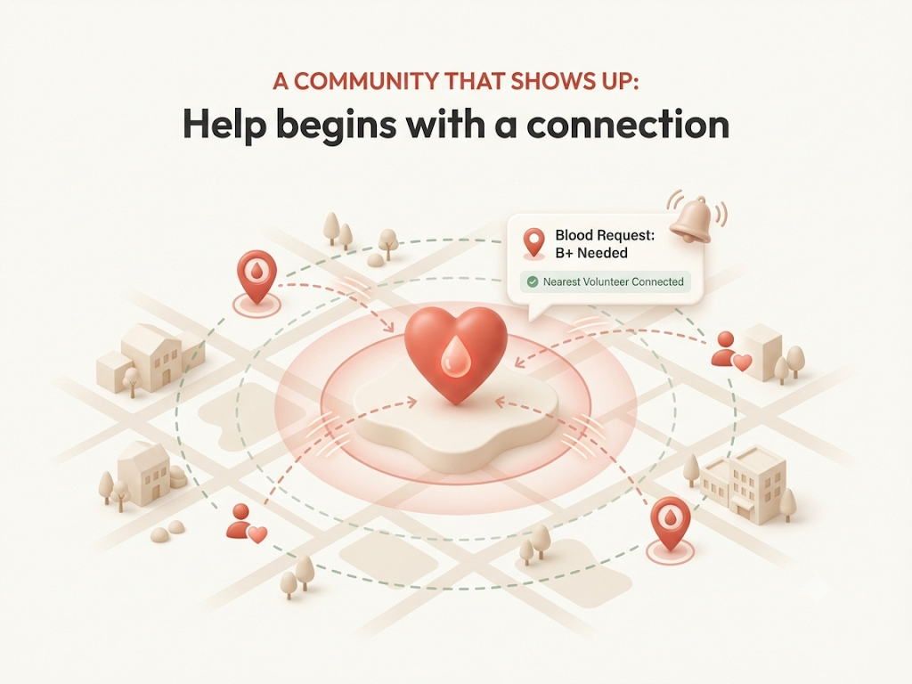
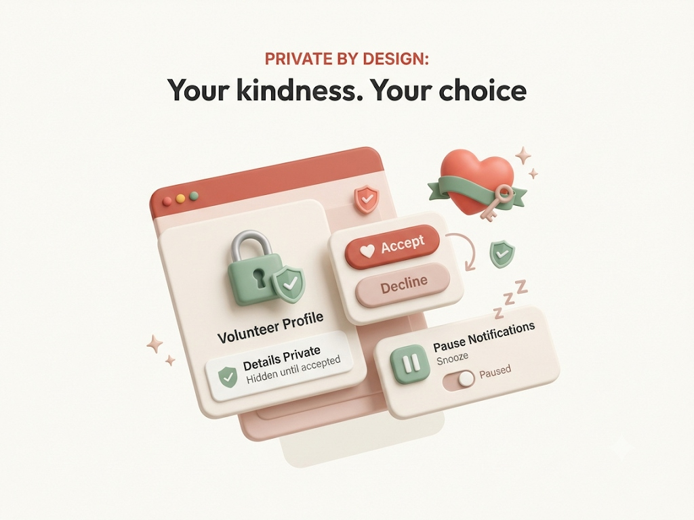

Help begins with a connection.
When blood is needed, reaching willing donors should be simpler. EasyConnect helps patients and caregivers send requests to nearby volunteers and coordinate the next step privately.
- Relevant alerts for nearby volunteers
- A choice to accept or decline
- Private coordination after a response
How EasyConnect works
-
01
Request Blood
Enter the required blood group, hospital, and location to start a donor request.
-
02
Find Matching Donors
-
03
Predict Donor Willingness
EasyConnect estimates which matching donors are most likely to respond, helping prioritize outreach.
-
04
Notify Nearby Donors
Nearby matching volunteers receive an alert and choose whether they can help.
-
05
Donor Accepts Request
-
06
Connect & Donate
After a donor accepts, coordinate privately and arrange donation at an authorized blood centre.
-
07
Verify Donation
Confirm the completed donation to keep the request status and donor records up to date.
Your kindness. Your choice.
Helping should feel safe and voluntary. You stay in control of your availability, your responses, and the contact details you choose to share.
Keep personal details private
Your phone number and precise location are not displayed on public profiles.
Choose when to respond
Review invitations and accept or decline based on your circumstances.
Pause when you need to
Manage notification preferences and take a break from invitations.

A clearer path from request to connection
When someone needs blood, knowing what happens next matters. EasyConnect helps patients, caregivers, and willing donors connect and coordinate.
Reach relevant donors
Send a request to nearby volunteers with a matching blood group.
Know who can help
Donors choose whether to accept, helping you coordinate with those who respond.
Coordinate with confidence
Connect privately after acceptance and arrange the next step with the hospital or blood centre.
A few questions, answered.
You can create a volunteer profile and provide your availability and donation history. Whether you can donate on a particular day is determined by the authorized blood centre after screening.
Requests are intended for opted-in volunteers whose location preferences, availability, and donation history fit the request. Outreach may expand if more responses are needed. A notification does not guarantee that a donor will be available.
A completion code or QR exchange can record confirmation between participants. It does not independently prove that a medical donation occurred. ‘Community-confirmed’ means participants confirmed the event; ‘Facility-verified’ should appear only when supported by an authorized blood-centre record.
Invitations pause during your recovery period. For whole-blood donation in India, the applicable interval is generally 90 days for males and 120 days for females. Other donation types and medical deferrals follow different rules. The blood centre makes the final eligibility decision.
Be there when someone nearby needs help.
Request support for a loved one, or join the volunteers willing to respond.